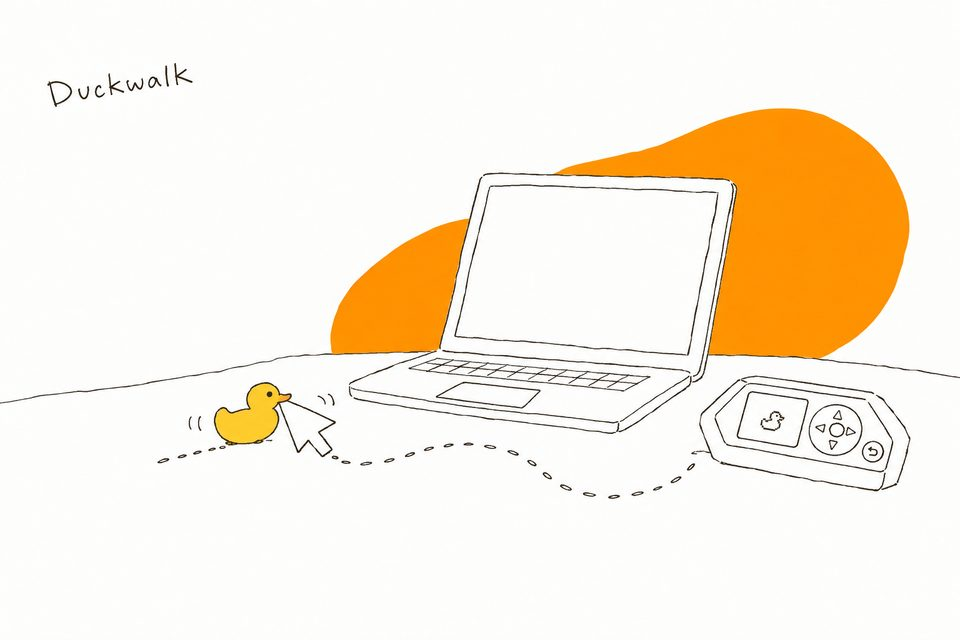

Duckwalk
Harold, a rubber debugging duck on your Flipper Zero, keeps your computer awake while you step away, and works as its remote.


What Harold does
When you step away, he moves the mouse pointer so the lock timer, the screen saver and your "away" status still see someone at the desk, then puts it back where it was. Over USB or Bluetooth, with no drivers and nothing to install on the computer.
Walk
A short, curved, random walk every few minutes. Never the same path twice.
Subtle
One pixel out and back. Invisible while you work.
Wander
The pointer drifts around without stopping, and glides back to where it started when you turn it off.
It knows when to stop
Work hours only keeps him to Monday to Friday, 8 to 18. Stop after puts him to sleep when nobody has been around for 1 to 8 hours, so a computer you walked away from still locks.
With the optional PC helper running on Windows, Harold lets go of the pointer the moment you touch your own mouse or keyboard, over USB or Bluetooth.
On the Flipper
- OK
- Wake Harold or put him to sleep. Hold to quack.
- →
- Settings: mode, USB or Bluetooth, how often, how far, work hours, Stop after.
- ←
- Remote: play, pause, volume and tracks; next and previous slide; a D-pad mouse.
- ↑
- Preview the next walk, drawn to scale. OK plays it now.
- ↓
- Connection check: shows whether the Flipper or the computer needs attention.
- Back
- Leave Duckwalk. USB and Bluetooth go back to normal.
The user guide shows every screen.
Install
- From the Flipper app (once Duckwalk is listed): open the Flipper mobile app or Flipper Lab, go to USB and install Duckwalk.
- From a release: download
duckwalk.fapfrom the releases page and copy it toapps/USB/on the Flipper's SD card with qFlipper. - On first launch Harold asks how to reach your computer: ← for USB, → for Bluetooth. Bluetooth walks you through pairing on the Flipper's screen.
Needs official Flipper firmware 1.5 or newer. Tested on Windows 11; reports from macOS and Linux are welcome.
Before you use it at work
A keep-awake tool can be against your employer's rules. Duckwalk makes your computer look attended; whether that is acceptable where you work is your decision. It only moves the pointer. It never types, and it clicks or presses media keys only when you use the remote.